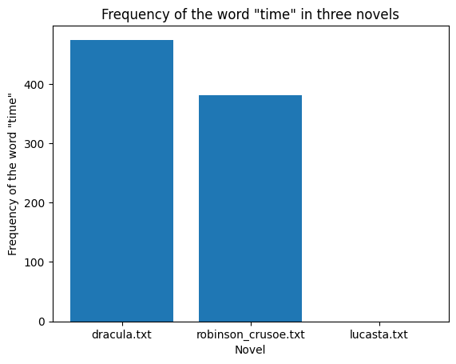
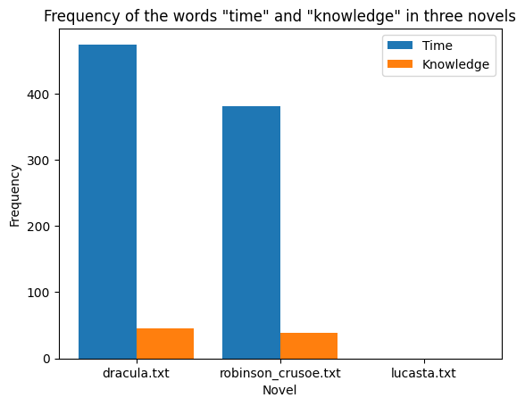
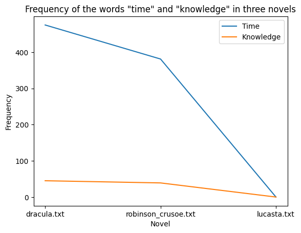
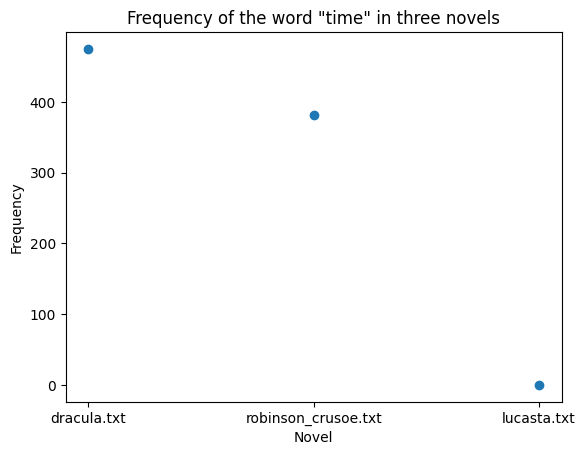

# Data Information:Introduction
I chose ten novels from three different period of ~100 years. I started with Gothic literature from the late 1700’s to 1899. I then chose ten works ranging from the late 1600s right up to 1799ish (carefully not choosing duplicates). Then I used ten works from 1480-1750, trying to mostly focus on before 1700. I used the Norton World and English Literature sets to pick out my sources. The limitations I see with this dataset is of course that I can’t use every piece of literature. Hence, I stuck with the most influential and well known works.
My motivation for this project came from playing around with Voyant and discovering that the word “time” was used a lot of times in Gothic literature from 1890-1899. So, I decided to set out and explore this deeper. The questions I asked were is this a theme that became popular during the Vicotrian period as a whole, or just the final decade? How does the Victorian usage of the word “time” compare to 18th century usage? And finally, was time a concept in peoples’ minds pre-industrialization?
import requests
# Define the URL of the "Dracula" text file on Project Gutenberg
dracula_url = 'https://www.gutenberg.org/files/345/345-0.txt'
# Download the text file
response = requests.get(dracula_url)
# Save the text file to disk
with open('dracula.txt', 'w', encoding='utf-8') as f:
f.write(response.text)
# Define the URL of the "Robinson Crusoe" text file on Project Gutenberg
robinson_crusoe_url = 'https://www.gutenberg.org/files/521/521-0.txt'
# Download the text file
response = requests.get(robinson_crusoe_url)
# Save the text file to disk
with open('robinson_crusoe.txt', 'w', encoding='utf-8') as f:
f.write(response.text)
# Define the URL of the "Lucasta" text file on Project Gutenberg
lucasta_url = 'https://www.gutenberg.org/files/703/703-0.txt'
# Download the text file
response = requests.get(lucasta_url)
# Save the text file to disk
with open('lucasta.txt', 'w', encoding='utf-8') as f:
f.write(response.text)# Define the filenames of the downloaded novels
filenames = ['dracula.txt', 'robinson_crusoe.txt', 'lucasta.txt']
# Loop over each filename and count the number of times "time" appears in the text
for filename in filenames:
with open(filename, 'r', encoding='utf-8') as f:
text = f.read()
count = text.count('time')
print(f'The word "time" appears {count} times in {filename}.')The word "time" appears 475 times in dracula.txt.
The word "time" appears 381 times in robinson_crusoe.txt.
The word "time" appears 0 times in lucasta.txt.import matplotlib.pyplot as plt
# Define the filenames of the downloaded novels
filenames = ['dracula.txt', 'robinson_crusoe.txt', 'lucasta.txt']
# Loop over each filename and count the number of times "time" appears in the text
counts = []
for filename in filenames:
with open(filename, 'r', encoding='utf-8') as f:
text = f.read()
count = text.count('time')
counts.append(count)
# Create a histogram of the word frequency counts
plt.bar(filenames, counts)
plt.xlabel('Novel')
plt.ylabel('Frequency of the word "time"')
plt.title('Frequency of the word "time" in three novels')
plt.show()
# Define the filenames of the downloaded novels
filenames = ['dracula.txt', 'robinson_crusoe.txt', 'lucasta.txt']
# Loop over each filename and count the number of times "knowledge" appears in the text
for filename in filenames:
with open(filename, 'r', encoding='utf-8') as f:
text = f.read()
count = text.count('knowledge')
print(f'The word "knowledge" appears {count} times in {filename}.')The word "knowledge" appears 45 times in dracula.txt.
The word "knowledge" appears 39 times in robinson_crusoe.txt.
The word "knowledge" appears 0 times in lucasta.txt.
# Define the filenames of the downloaded novels
filenames = ['dracula.txt', 'robinson_crusoe.txt', 'lucasta.txt']
# Loop over each filename and count the number of times "time" and "knowledge" appear in the text
time_counts = []
knowledge_counts = []
for filename in filenames:
with open(filename, 'r', encoding='utf-8') as f:
text = f.read()
time_count = text.count('time')
knowledge_count = text.count('knowledge')
time_counts.append(time_count)
knowledge_counts.append(knowledge_count)
# Create a comparison histogram of the word frequency counts
width = 0.4
plt.bar([i - width/2 for i in range(len(filenames))], time_counts, width=width, label='Time')
plt.bar([i + width/2 for i in range(len(filenames))], knowledge_counts, width=width, label='Knowledge')
plt.xticks(range(len(filenames)), filenames)
plt.xlabel('Novel')
plt.ylabel('Frequency')
plt.title('Frequency of the words "time" and "knowledge" in three novels')
plt.legend()
plt.show()
# Define the filenames of the downloaded novels
filenames = ['dracula.txt', 'robinson_crusoe.txt', 'lucasta.txt']
# Loop over each filename and count the number of times "time" and "knowledge" appear in the text
time_counts = []
knowledge_counts = []
for filename in filenames:
with open(filename, 'r', encoding='utf-8') as f:
text = f.read()
time_count = text.count('time')
knowledge_count = text.count('knowledge')
time_counts.append(time_count)
knowledge_counts.append(knowledge_count)
# Create a line graph of the word frequency counts
plt.plot(filenames, time_counts, label='Time')
plt.plot(filenames, knowledge_counts, label='Knowledge')
plt.xlabel('Novel')
plt.ylabel('Frequency')
plt.title('Frequency of the words "time" and "knowledge" in three novels')
plt.legend()
plt.show()
import numpy as np
# Define the filenames of the downloaded novels
filenames = ['dracula.txt', 'robinson_crusoe.txt', 'lucasta.txt']
# Loop over each filename and count the number of times "time" appears in the text
time_counts = []
for filename in filenames:
with open(filename, 'r', encoding='utf-8') as f:
text = f.read()
time_count = text.count('time')
time_counts.append(time_count)
# Create a scatter plot of the word frequency counts
x = np.arange(len(filenames))
y = time_counts
fig, ax = plt.subplots()
ax.scatter(x, y)
ax.set_xticks(x)
ax.set_xticklabels(filenames)
ax.set_xlabel('Novel')
ax.set_ylabel('Frequency')
ax.set_title('Frequency of the word "time" in three novels')
plt.show()
# Explenation
The graphs above show the usage of the word time in 3 of the novels I chose to work with.
The final will contain a much larger number of works. It shows that in a novel from the
pristine period of England, the word time was not used at all as in Lucasta, in Robinson Crusoe,
the word time was used a good amount, which makes sense given the novels plot, and Dracula has
the most usage. # Beginnings of your analysisimport nltk
from nltk.tokenize import word_tokenize
# Load the Dracula text
with open('dracula.txt', 'r', encoding='utf-8') as f:
dracula_text = f.read()
# Tokenize the word "time" in the Dracula text
dracula_time_tokens = word_tokenize(dracula_text)
dracula_time_tokens = [t.lower() for t in dracula_time_tokens if t.lower() == 'time']
# Load the Robinson Crusoe text
with open('robinson_crusoe.txt', 'r', encoding='utf-8') as f:
robinson_crusoe_text = f.read()
# Tokenize the word "time" in the Robinson Crusoe text
robinson_crusoe_time_tokens = word_tokenize(robinson_crusoe_text)
robinson_crusoe_time_tokens = [t.lower() for t in robinson_crusoe_time_tokens if t.lower() == 'time']
# Load the Lucasta text
with open('lucasta.txt', 'r', encoding='utf-8') as f:
lucasta_text = f.read()
# Tokenize the word "time" in the Lucasta text
lucasta_time_tokens = word_tokenize(lucasta_text)
lucasta_time_tokens = [t.lower() for t in lucasta_time_tokens if t.lower() == 'time']
# Print the results
print('Occurrences of the word "time" in Dracula:', len(dracula_time_tokens))
print('Occurrences of the word "time" in Robinson Crusoe:', len(robinson_crusoe_time_tokens))
print('Occurrences of the word "time" in Lucasta:', len(lucasta_time_tokens))Occurrences of the word "time" in Dracula: 377
Occurrences of the word "time" in Robinson Crusoe: 277
Occurrences of the word "time" in Lucasta: 0Plans
Beginning with tokenizing, I hope to isolate the word “time” from any other word it might be connected to to find its true number of usage within my dataset. Meaning, seperating the word “time” from words like “sometime”, “next time”, etc. I thought tokenizing the word “time” using NLTK would be a good starting point for this analysis.
Future Visualizations
For the next four visualizations I plan on creating, I will be making (hopefully) network maps linking the word “time” to where it has been used in the novels. Though, I realize this might be out of scope for the amount of time I have. Secondly, a more complex bar chart comparing all 30 novels I plan on using. Thirdly, I want to make a line graph to show the increase in usage of the word “time” throughout my chosen centuries. Fourth, I want to create possible a heat graph to show where the word “time” was used most in the works I pulled.